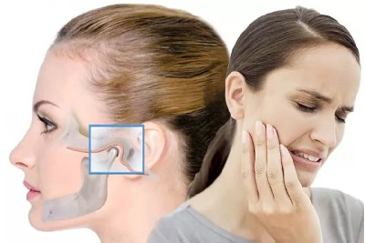
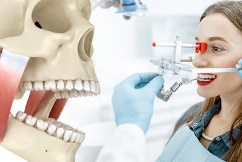
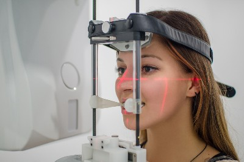

Боль в челюсти при открывании рта
Плохо открывается челюсть: причины
Затрудненное открывание и закрывание челюстей может быть вызвано различными причинами, поэтому важно обратиться к опытному гнатологу в Хабаровске для точной диагностики и назначения эффективного лечения. Врач сможет определить заболевание, патологию или дисфункцию, а также направить к специалисту, если это необходимо, чтобы помочь пациенту справиться с проблемой.
Вы можете ознакомиться с нашими гнатологами в соответствующем разделе сайта

"Не могу отрыть рот - боль в челюсти"
Если у пациента возникают боли и затруднения при открывании рта, это может быть связано с дисфункцией ВНЧС (височно-нижнечелюстного сустава). Этот сустав отвечает за подвижность нижней челюсти, и при наличии проблем с его функционированием, затруднения с открыванием и закрыванием рта не редкость.
Запишитесь на диагностику к гнатологу в Хабаровске по телефону +7 (4212) 477-905
- Плохо поставленные зубные протезы, ошибки терапевтического стоматологического лечения
- Съехались зубные ряды из-за отсутсвия зубов и зубных имплантов
- Неправильный прикус
- Бруксизм - сильный скрежет зубами во сне
- Механическое повреждение в результате травмы
Основные причины нарушений в работе ВНЧС:
"Болит зуб - поэтому не могу отрыть рот"
"При открывании рта болит челюсть с одной стороны"
Существует множество причин, по которым при открывании рта челюсть болит только с одной стороны:
- Прорезывается зуб мудрости ("восьмерка", третий моляр)
- Кариес, пульпит, периодонтит.
- Некачетсвенное стоматологическое лечение
- Прикорневая киста
Давайте разбираться:

Дисфункцию ВНЧС лечит стоматолог-гнатолог. Симптомы дисфункции ВНЧС:
- Хрустит и / или болит челюсть при открывании рта
- Боли в жевательных мышцах
- Непроизвольное сжимание челюсти
- Бруксизм - скрежет зубами во сне
- Быстрая утомляемость жевательных мышц при приеме пищи
Пришло время обратиться к гнатологу, если:
- Сложно пережевывать твердую пищу
- Ассиметрия нижней трети лица
- S-образнная трактория открывания рта
- Головные боли, головокружения
- Заложенность в ушах, снижение слуха
Возможные осложнения:
Диагностика
При дисфункции ВНЧС, гнатолог проводит комплексное обследование, которое, кроме пальпации включает в себя:
- Рентгенография
- КЛКТ ВНЧС или челюсти
- МРТ ВНЧС
- Головные боли, головокружения
- Кондилография 
Лечение
Стоматологический клинический протокол лечения сустава при сложностях и болях при открывании рта составляется индивидуально и включает в себя:
- Медикаментозная терапия - подбор обезболивающих
- Индивидуальные окклюзионные шины – нормализация положения жевательных мышц
- МРТ ВНЧС
- TENS-терапия – восстановление эластичности мышечных волокон
- Общее стоматологическое лечение 
Подробно опишите Вашу ситуацию: что беспокоит,
давно ли это началось
Мы перезвоним Вам в ближайшее рабочее время.
График работы института: ежедневно с 08.00 до 21.00